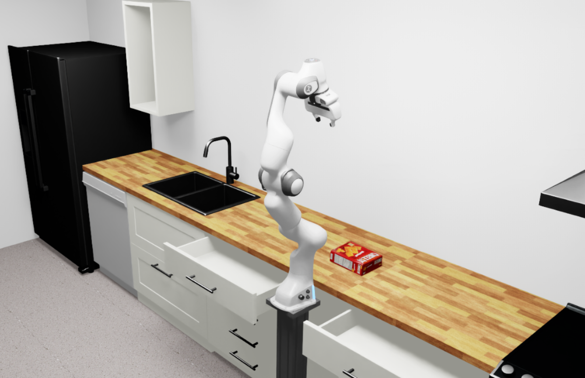

First Arena Environment#
After setting up the docker container and installing isaac_arena, learn how
to compose your first simple Isaac Arena environment by combining assets, scenes, and tasks.
Once within the docker container, run the following command to compile your first Isaac Arena environment:
python isaac_arena/examples/compile_env_notebook.py
The compiled environment will spawn in an Isaac Sim instance and run for some steps with zero actions. You should see the following scene:
{kind=link}
Code Explanation#
The following script demonstrates how to create the simple kitchen environment from
above with a Franka robot and a cracker box object using the isaac_arena API.
import torch
import tqdm
import pinocchio # noqa: F401
from isaaclab.app import AppLauncher
# Launch the Isaac Sim application
print("Launching simulation app")
simulation_app = AppLauncher()
from isaac_arena.assets.asset_registry import AssetRegistry
from isaac_arena.cli.isaac_arena_cli import get_isaac_arena_cli_parser
from isaac_arena.environments.arena_env_builder import ArenaEnvBuilder
from isaac_arena.environments.isaac_arena_environment import IsaacArenaEnvironment
from isaac_arena.scene.scene import Scene
from isaac_arena.tasks.dummy_task import DummyTask
from isaac_arena.utils.pose import Pose
# Step 1: Initialize and get the assets from the registry
asset_registry = AssetRegistry()
background = asset_registry.get_asset_by_name("kitchen")()
embodiment = asset_registry.get_asset_by_name("franka")()
cracker_box = asset_registry.get_asset_by_name("cracker_box")()
cracker_box.set_initial_pose(
Pose(position_xyz=(0.4, 0.0, 0.1), rotation_wxyz=(1.0, 0.0, 0.0, 0.0))
)
# Step 2: Create a scene with the assets
scene = Scene(assets=[background, cracker_box])
# Step 3: Create a task
task = DummyTask()
# Step 4: Create the Isaac Arena environment
isaac_arena_environment = IsaacArenaEnvironment(
name="my_first_arena_env",
embodiment=embodiment,
scene=scene,
task=task,
teleop_device=None,
)
# Step 5: Build and compile the environment
args_cli = get_isaac_arena_cli_parser().parse_args([])
env_builder = ArenaEnvBuilder(isaac_arena_environment, args_cli)
env = env_builder.make_registered()
env.reset()
# Step 6: Run the simulation with zero actions
NUM_STEPS = 1000
for _ in tqdm.tqdm(range(NUM_STEPS)):
with torch.inference_mode():
actions = torch.zeros(env.action_space.shape, device=env.unwrapped.device)
env.step(actions)
Step-by-Step Breakdown#
1. Initialize and interac with the Asset Registry
asset_registry = AssetRegistry()
The AssetRegistry provides access to all available assets including robots, objects, and backgrounds. It automatically discovers registered assets through the registration system.
See Assets Design for details on asset architecture.
background = asset_registry.get_asset_by_name("kitchen")()
embodiment = asset_registry.get_asset_by_name("franka")()
cracker_box = asset_registry.get_asset_by_name("cracker_box")()
2. Compose the Scene
scene = Scene(assets=[background, cracker_box])
See Scene Design for scene composition details.
3. Create a Task
A task defines the objective, success criteria, and behavior logic for the environment. For this example, we use the DummyTask.
task = DummyTask()
See Tasks Design for task creation details.
4. Create the Isaac Arena Environment
isaac_arena_environment = IsaacArenaEnvironment(
name="my_first_arena_env",
embodiment=embodiment,
scene=scene,
task=DummyTask(),
teleop_device=None,
)
This puts everything together into an IsaacArenaEnvironment object.
See Environment Design for environment composition details.
5. Build the Environment
args_cli = get_isaac_arena_cli_parser().parse_args([])
env_builder = ArenaEnvBuilder(isaac_arena_environment, args_cli)
env = env_builder.make_registered()
env.reset()
The ArenaEnvBuilder compiles the high-level environment description into Isaac Lab configurations.
See Environment Compilation Design for compilation details.
6. Run the Simulation
for _ in range(NUM_STEPS):
with torch.inference_mode():
actions = torch.zeros(env.action_space.shape, device=env.unwrapped.device)
env.step(actions)
This is just a standard Isaac Lab simulation loop with zero actions.
Next Steps#
Now that you have created your first environment, explore:
Tasks Design - Create custom tasks with rewards and terminations
Assets Design - Discover available assets and create custom ones
Affordances Design - Add interactive behaviors to objects
Creating a New Affordance - Implement custom affordances
Explore pre-built example environments in isaac_arena/examples/example_environments/ for more complex scenarios.